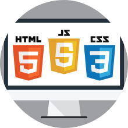
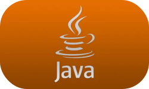

From a young age, I was exposed to computers and the vast realm of the internet, which ignited my curiosity about their inner workings. Although I only pondered about it initially, my fascination grew and I began wondering about the intricacies of website development. This curiosity led me to discover three fundamental languages: HTML, CSS, and JavaScript. Motivated, I even attempted to create my own website, but unsurprisingly, my interest waned quickly, and I abandoned the endeavor.
During my high school years, I had the good fortune of befriending individuals who shared my passion for coding. While they dabbled in languages such as C#, C++, and Python without expertise, I found solace in the companionship of someone who shared my interests. However, this camaraderie alone did not solidify my determination to pursue programming.
It was during my senior year of high school that my interest truly blossomed. Under the guidance of a dedicated teacher, I delved into the realm of Java programming, experiencing a mixture of joy, frustration, and admiration for this hobby.
